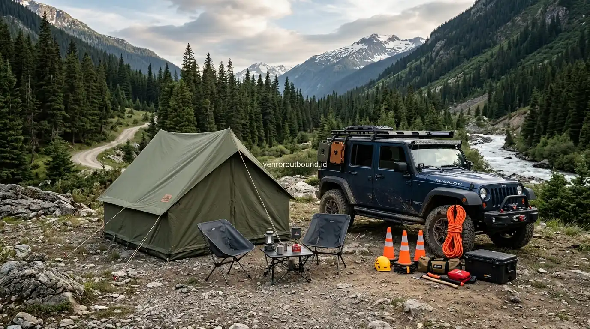

1. Mengapa Kombinasi Camping, Outbound, & Offroad Sangat Menarik
Jawaban singkat: Paket outbound camping dan wisata offroad dapat menggabungkan aktivitas bermalam di alam, permainan kelompok, dan pengalaman menjelajah medan menggunakan kendaraan offroad 4x4. Format seperti ini dapat menjadi pilihan bagi komunitas atau perusahaan yang menginginkan kegiatan luar ruang yang lebih variatif. Jika diinginkan, paket ini juga dapat dipadukan dengan outbound plus rafting. Detail venue, durasi, fasilitas, aktivitas, kendaraan, konsumsi, dan perlengkapan perlu disesuaikan dengan proposal program.
Rutinitas kerja di ruang kantor ber-AC yang padat target sering kali memicu kejenuhan mental dan merenggangkan komunikasi antarkaryawan. Mengadakan corporate gathering konvensional di dalam aula hotel berbintang kadang terasa terlalu formal dan kurang memberikan dorongan energi baru.
Sebagai solusi inovatif, perpaduan antara outbound team building, perkemahan alam (camping), dan petualangan jip offroad menghadirkan atmosfer petualangan yang segar. Format kegiatan ini mengajak seluruh peserta melepaskan sekat birokrasi, menikmati udara sejuk pegunungan, menghadapi simulasi kerja sama di alam bebas, serta merasakan sensasi melintasi trek bebatuan dan lumpur bersama rekan sekerja.
Kombinasi aktivitas ini dirancang untuk memicu pelepasan endorfin dan adrenalin secara seimbang, menumbuhkan rasa saling percaya, serta menciptakan memori kebersamaan yang membekas kuat bagi seluruh jajaran tim.
2. Eksplorasi Kawasan Pegunungan: Potensi Area Batu & Pacet Mojokerto
Jawa Timur memiliki bentang alam pegunungan yang sangat ideal untuk penyelenggaraan kegiatan petualangan luar ruang. Dua kawasan yang kerap menjadi referensi utama adalah:
A. Kawasan Dataran Tinggi Kota Batu
Dikelilingi oleh Gunung Panderman, Arjuno, dan Welirang, kawasan Kota Batu menawarkan udara sejuk dengan pemandangan lembah pinus yang asri. Kawasan wisata alam seperti sekitar Coban Rondo atau Coban Rais sering dijadikan referensi bumi perkemahan dan titik awal jalur penjelajahan jip offroad yang menembus hutan pinus dan perkebunan apel.
B. Kawasan Wisata Alam Pacet & Trawas Mojokerto
Terletak di kaki Gunung Welirang dan Penanggungan, kawasan Pacet dan Trawas menyuguhkan lanskap persawahan terasering, aliran sungai berbatu yang jernih, serta jalur offroad menantang yang melintasi bukit-bukit berlumpur. Kawasan ini juga sangat strategis karena mudah dikombinasikan dengan aktivitas arung jeram (rafting) di Sungai Kromong.
Catatan Transparansi Lokasi: Kawasan Batu dan Pacet Mojokerto merupakan referensi destinasi outdoor yang sangat populer. Namun, pemilihan venue perkemahan spesifik, ketersediaan fasilitas sanitasi air bersih, izin kegiatan, serta daya tampung lokasi harus senantiasa dikonfirmasi dan disesuaikan berdasarkan proposal program resmi.
3. Struktur Aktivitas: Dinamika Kelompok, Safari Jip, & Api Unggun
Rancangan paket outbound camping dan offroad disusun dengan alur psikologi energi yang seimbang agar peserta tidak mengalami kelelahan berlebih:
- Sesi Ice Breaking & Team Building (Hari Pertama): Dimulai dengan permainan pencair suasana, pembagian kelompok acak lintas divisi, dan simulasi pemecahan masalah (problem solving games) di lapangan rumput perkemahan.
- Malam Keakraban & Api Unggun (Night Gathering): Setelah menikmati makan malam prasmanan/barbeque, peserta berkumpul di sekeliling api unggun untuk sesi refleksi diri, hiburan akustik santai, dan penguatan komitmen budaya perusahaan.
- Wisata Safari Jip Offroad 4x4 (Hari Kedua): Di pagi hari setelah senam peregangan, peserta menaiki armada jip 4x4 terbuka yang dipandu pengemudi profesional untuk menjelajah jalur offroad hutan, melintasi kubangan air, dan berfoto di puncak bukit pemandangan.
- Opsi Ekstensi Arung Jeram (Outbound Plus Rafting): Bagi tim yang menginginkan petualangan maksimal, etape offroad dapat diarahkan menuju basecamp rafting untuk menutup kegiatan dengan pengarungan jeram sungai yang menyegarkan.

4. Estimasi Rundown Program 2 Hari 1 Malam
Berikut adalah contoh susunan itinerary (rundown acuan) untuk kegiatan gathering petualangan 2 hari 1 malam:
| Hari & Waktu | Agenda Kegiatan | Tujuan & Keterangan |
|---|---|---|
| Hari 1: 09.00 - 10.00 | Kedatangan di Venue Camping Ground & Welcome Drink | Registrasi peserta, pembagian tenda, dan penataan barang bawaan |
| Hari 1: 10.00 - 12.00 | Sesi Ice Breaking & Fun Games Dinamika Kelompok | Mencairkan ketegangan, membangun sinergi kelompok acak |
| Hari 1: 12.00 - 13.30 | Istirahat, Sholat, & Makan Siang Prasmanan (ISOMA) | Pemulihan stamina dan waktu santai di area perkemahan |
| Hari 1: 13.30 - 16.00 | Modul Strategic Team Building & Leadership Challenge | Simulasi komunikasi efektif dan strategi kolaborasi kerja |
| Hari 1: 19.00 - 22.00 | Makan Malam Barbeque, Api Unggun, & Sharing Session | Membangun kehangatan emosional dan apresiasi tim internal |
| Hari 2: 06.00 - 07.30 | Senam Pagi (Morning Stretch) & Sarapan Tradisional | Menghirup udara segar pegunungan dan persiapan fisik |
| Hari 2: 08.00 - 11.30 | Safari Wisata Offroad Jip 4x4 / Opsi Rafting | Penjelajahan trek hutan pinus, medan berlumpur, & foto alam |
| Hari 2: 11.30 - 13.30 | Bersih Diri, Makan Siang, Debriefing Akhir, & Check-out | Refleksi pembelajaran program dan persiapan perjalanan pulang |
5. Standar Fasilitas Perkemahan, Sanitasi, & Kelaikan Armada Offroad
Untuk menjamin kenyamanan seluruh kalangan karyawan (termasuk peserta wanita dan keluarga), fasilitas pendukung perkemahan dan armada kendaraan wajib memenuhi standar kelaikan operasional:
- Spesifikasi Tenda Dome Berkualitas: Tenda dilengkapi lapisan ganda (double layer) tahan hujan lebat, alas terpal tebal, matras busa/angin empuk, serta sleeping bag bersih dan wangi untuk setiap peserta.
- Kelayakan Sanitasi & Toilet Bersih: Ketersediaan kamar mandi dan toilet dengan pasokan air bersih melimpah, pencahayaan memadai di malam hari, serta jarak yang aman dan nyaman dari lokasi tenda.
- Kelaikan Kendaraan Jip Offroad 4x4: Seluruh armada jip melalui inspeksi teknis rutin (kondisi rem, ban pacul/mud-terrain, sistem penggerak 4 roda, roll bar pelindung kabin, dan sabuk pengaman).
- Pengemudi Lokal Bersertifikasi: Setiap kendaraan dikemudikan oleh driver lokal yang hafal karakteristik medan tanjakan, turunan curam, dan titik rawan lumpur.
6. Checklist Verifikasi & Tips Memilih Paket Petualangan Terpercaya
Sebelum tim panitia atau Procurement perusahaan melakukan pemesanan (booking) paket petualangan outbound camping dan offroad, pastikan poin-poin berikut telah diverifikasi:
Checklist Verifikasi Booking Paket Camping & Offroad:
- Kapasitas Peserta per Tenda & Jip: Pastikan kapasitas tenda tidak terlalu padat (misalnya tenda kapasitas 4 diisi 3 orang agar leluasa) dan jip diisi maksimal 3-4 peserta per unit.
- Kelengkapan Menu Konsumsi: Pastikan menu makanan prasmanan disajikan hangat dan higienis, serta tersedia air mineral dan kopi/teh hangat tanpa batas di area camp.
- SOP Cuaca Buruk (Rain Contingency): Pastikan tersedia aula transit tertutup atau pendopo shelter terdekat bila terjadi hujan deras di malam hari.
- Alur Penagihan & Legalitas: Pastikan vendor berbadan usaha resmi, mampu menerbitkan invoice resmi, dan memiliki mekanisme pembayaran termin yang jelas.
Konsultasikan Petualangan Offroad & Camping Tim Anda
Segera diskusikan rencana tanggal, jumlah peserta, pilihan destinasi Batu atau Pacet, serta modul kegiatan gathering bersama tim ahli VENDOR OUTBOUND.
Hubungi Kami via WhatsApp7. Kesimpulan & Konsultasi Tanggal Kegiatan
Paket outbound camping dan wisata offroad di kawasan Batu dan Pacet Mojokerto menawarkan perpaduan sempurna antara pembelajaran dinamika kelompok (team building), kehangatan malam keakraban di bawah tenda, serta sensasi petualangan alam bebas yang memompa semangat. Jika dipadukan dengan outbound plus rafting, agenda gathering ini menjadi pengalaman komprehensif yang tidak terlupakan.
Untuk menyusun itinerary khusus yang sesuai dengan profil tim dan ketersediaan anggaran perusahaan Anda, hubungi tim konsultan VENDOR OUTBOUND melalui layanan WhatsApp resmi.
Pertanyaan Sering Diajukan (FAQ)

Arby Ardiansyah
Arby Ardiansyah menulis konten informatif mengenai outbound, team building, corporate gathering, petualangan alam terbuka, dan perancangan agenda gathering petualangan di Jawa Timur.